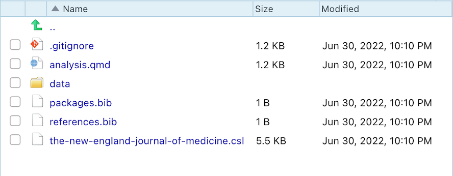

Create a Research Project with Quarto and rUM
Source:vignettes/O1_make_research_project.Rmd
O1_make_research_project.RmdIntroduction
This is a collection of document templates, available through R, from your friends at the University of Miami (UM). \(R+UM=rUM\)
The rUM package will help you create research
manuscripts by removing the configuration hassles commonly encountered
when learning to write papers using R. rUM will initialize
a new RStudio project and a Quarto file that includes the outline for a
research paper. The Quarto file comes preconfigured with a YAML header
(don’t worry if you don’t know what that means yet) with code chunks to
load the tidyverse and conflicted packages.
Manuscript sections have been created for Introduction, Methods,
Results, Conclusion, and References. The project also includes a
.gitignore file which is designed to help protect against
accidentally leaking data when using git with websites like www.github.com.
rUM’s documentation can be found here:
How do I get quarto and rUM? (Add a “quart
o’ rUM”!)
Modern version RStudio (v2022.07 or later) ships with Quarto but you can install the latest version of Quarto from here.
-
Add
rUMto your computer by:- using RStudio: click on the Packages tab in the bottom right windowpane, click the Install button, type rUM, and click Install.
- downloading rUM from CRAN and installing it by running this code in R console:
install.packages("rUM")- downloading the latest version of rUM from GitHub by running commands into the R console:
if (!requireNamespace("remotes")) install.packages("remotes") remotes::install_github("RaymondBalise/rUM") Use
rUMby running this in the console of RStudio:
Ordering rUM from the Menu
To create a research project that uses rUM, follow these
steps. This will initialize a new RStudio project that has an analysis.qmd Quarto
file using the tidyverse and conflicted
packages and some other useful files which are described below.
Using the RStudio menus, choose: File > New Project > New Directory
-
Scroll down and then select
rUMResearch Project Template
-
Specify the location of where your research project will be saved

Add rUM into an existing folder/directory that does not
have an RStudio project.
What if you have already created a folder containing the important
files for your project? Create a new project in your existing folder!
This will now be your project directory (complete with a
.Rproj file).
Navigate to File > New Project > Existing Directory
-
Specify the location of where your research project will be saved

Run the following script in your console:
# Change the text inside the quotes on the next line to indicate the path to your folder/directory.
PATH <- "~/Documents/blah"
make_project(PATH, type = "Quarto (analysis.qmd)")What is in the project? (What is served with your
rUM?)
A new project directory is created and it will be populated with these files:
- An aggressive
.gitignoreto help prevent the unintended sharing of sensitive study information or protected health information (PHI). -
analysis.qmdis a Quarto template for writing your research project. It has a preconfigured YAML header; Introduction, Methods, Results, Conclusion, and Reference sections; and a code chunk to construct your bibliography usingknitr::write_bib(). - An empty folder named
data. This folder is listed within the.gitignore. That means that git should not track these files. This should help prevent data leakage but be sure to talk to a data security expert before sharing any biomedical projects on websites like GitHub. - A
.Rprojfile with the same name as your project folder. - Two text files,
packages.bibandreferences.bib, which are used to hold details for your paper’s bibliography. Refer to the Methods and References sections, respectively, within theanalysis.qmdfile for initial examples of how to add/use references. -
the-new-england-journal-of-medicine.cslis the citation style language (CSL) based on the New England Journal of Medicine requirements.
Newly created files:

analysis.qmd:

Session
If you are new to R, ignore this.
sessionInfo()
#> R version 4.2.0 (2022-04-22)
#> Platform: aarch64-apple-darwin20 (64-bit)
#> Running under: macOS Monterey 12.5
#>
#> Matrix products: default
#> BLAS: /Library/Frameworks/R.framework/Versions/4.2-arm64/Resources/lib/libRblas.0.dylib
#> LAPACK: /Library/Frameworks/R.framework/Versions/4.2-arm64/Resources/lib/libRlapack.dylib
#>
#> locale:
#> [1] en_US.UTF-8/en_US.UTF-8/en_US.UTF-8/C/en_US.UTF-8/en_US.UTF-8
#>
#> attached base packages:
#> [1] stats graphics grDevices utils datasets methods base
#>
#> loaded via a namespace (and not attached):
#> [1] rprojroot_2.0.3 digest_0.6.29 R6_2.5.1 jsonlite_1.8.0
#> [5] magrittr_2.0.3 evaluate_0.16 stringi_1.7.8 rlang_1.0.4
#> [9] cachem_1.0.6 cli_3.3.0 rstudioapi_0.13 fs_1.5.2
#> [13] jquerylib_0.1.4 bslib_0.4.0 ragg_1.2.2 rmarkdown_2.14
#> [17] pkgdown_2.0.6 textshaping_0.3.6 desc_1.4.1 tools_4.2.0
#> [21] stringr_1.4.0 purrr_0.3.4 yaml_2.3.5 xfun_0.32
#> [25] fastmap_1.1.0 compiler_4.2.0 systemfonts_1.0.4 memoise_2.0.1
#> [29] htmltools_0.5.3 knitr_1.39 sass_0.4.2